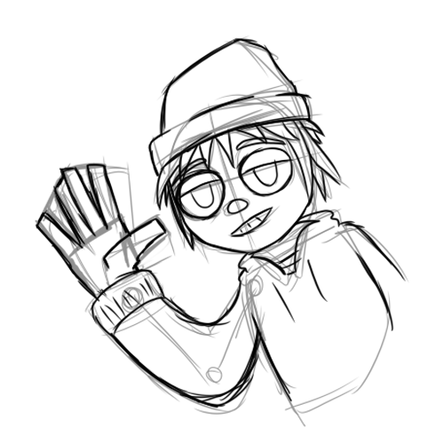
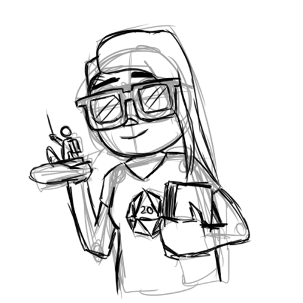
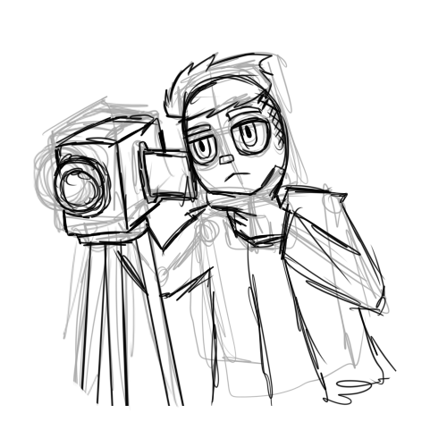
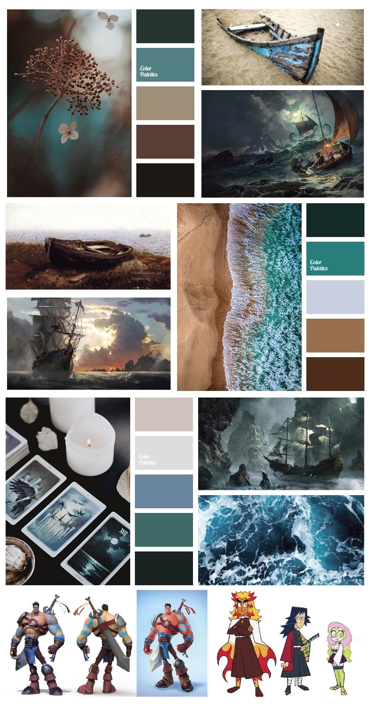
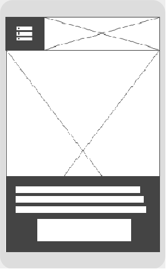
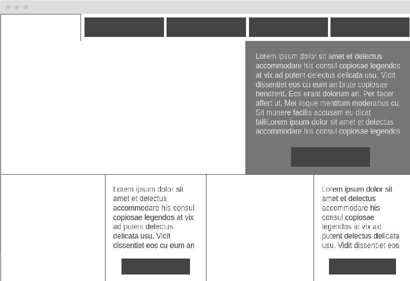

Arquetipos de Usuarios

Juan Riffo
Novato en Calabozos y dragones que busca una partida corta y simple para jugar, visitará por celular, descargará por computador.

Elena Carrera
Dm regular de DnD que busca material "relleno" para una campaña más larga. Lo más probalbe es que vea la pagina solo por celular.

Ryan Bloom
Influencer que genera contenido sobre dnd que busca material del cual hablar. Visitara la pagina por celular y computador.
Moodboard
Boceto de portada
 Boceto de página interior